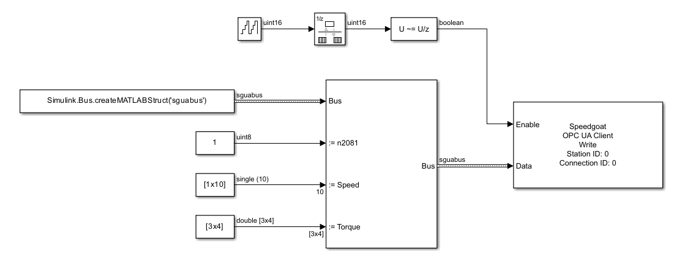

OPC UA - Client Write — Writes the value of an OPC UA variable node in the remote server
The Write block writes the value attribute of a specific variable node in the remote server. When the block is triggered by the input port, it sends out write requests and updates the output ports according to the response received. You can write multiple nodes with one Write block.
The values that should be written to the nodes in the remote server. The port type can be
Scalar, if one scalar node is configured
Vector, if one node of type vector is configured
Matrix, if one node of type matrix is configured
Vector, if multiple scalar nodes of the same data type are configured
Bus, if Bus Input is selected
The data type and dimensions are either inherited from the connected source block or by the DataType and Dimension elements of the struct defined in the Nodes parameter. Both the data type and dimensions must match the data type and dimensions of the node's value in the remote server. Otherwise, the Status port outputs an error.
Data type: Fundamental data types from boolean to double are supported as well as dimensions from scalar values to 2D-arrays
The block sends out write messages as long as the input port is TRUE. The transmission of a message happens at each sample hit according to the block's sample time.
Best practice is to set the block's sample time to a higher rate (like 1 ms) and trigger the Enable input port at a lower rate. This ensures low network traffic and immediate updates of the output ports once a response is received. Discover the OPC UA product examples and learn how a Pulse Generator in conjunction with a Detect Change block serve as a cyclic trigger.
Data type: boolean
Outputs the status code included in the confirmation message received from the server. Successful data exchange is indicated by 0. This port is visible if the Additional Outputs parameter is selected. Otherwise, the port is hidden.
Data type: uint32
Outputs the time included in the confirmation message received from the server. A timestamp is represented by the number of milliseconds since 1-Jan-1970 00:00:00 UTC. Refer to the OPC UA product examples to find out how to convert the timestamp. This port is visible if the Additional Outputs parameter is selected. Otherwise, the port is hidden.
Data type: uint64
Apply the Station ID of the corresponding Setup block. Must range between 0 and 65535.
Apply the Connection ID of the corresponding Connection block. Must range between 0 and 65535.
Changes the mode of node configuration. Nodes to be written can be defined either with parameters in the Node tab or with structs in the Nodes parameter. If selected, the Nodes parameter is visible and the Node tab is hidden.
As an alternative to configuring a node in the Node tab, the node properties can be passed as a struct to this parameter. The Extended Node Configuration parameter must be selected for this purpose. Define an array of struct for writing multiple nodes. The required struct elements are:
Namespace (see Namespace parameter)
IdentifierType (see Identifier Type parameter)
Identifier (see Identifier parameter)
Dimension: The dimension(s) of the node. Possible values are
1 for scalar values
n for vectors
[m, n] for 2D-arrays
DataType: The data type of the node. Must be passed as a character array. Possible options are: double, single, uint32, int32, uint16, int16, uint8, int8, boolean
You can create the struct in the base workspace, the model workspace or in a data dictionary and pass the variable name to the mask parameter. As an alternative, you can directly define the struct in the mask parameter. Refer to the OPC UA Client Read block content for further information about this parameter.
If selected, the values to be written are required as a bus signal. The corresponding Simulink Bus object is automatically created in the base workspace. Each defined node is represented by a bus element whose name is derived from the node identifier. The matlab.lang.makeValidName function is called to convert the identifier into a string that works with code generation. For long strings, increase the Maximum Identifier Length model parameter. The bus element holds the value to be written. Use Bus Assignment blocks to write values to the bus elements.

To ensure unique bus element names, use separate blocks for writing nodes with the same identifier but different namespaces.
The name for the Simulink Bus object to be created in the base workspace. The name must be a character array. An empty character array results in an automatically created bus name based on the block name. The matlab.lang.makeValidName function is called to convert the name into a string that works with code generation. For long names, increase the Maximum Identifier Length model parameter. The parameter is visible if the Bus Input parameter is selected. Otherwise, the parameter is hidden.
If selected, the Status and Time ports output status and timestamp information of the write operation.
Defines the base sample time at which this driver block gets its sample hit. This parameter can also be set to -1 for inherited sample time. The units are in seconds.
This tab is visible if the Extended Node Configuration parameter is cleared. Otherwise, the tab is hidden. On the Node tab you can configure one single node for writing.
The index of the namespace to which the node is related.
Defines the format of the Node Identifier parameter. Refer to the OPC UA Server Node block content for further information about this parameter.
The unique identifier of the node within the specified namespace. Refer to the OPC UA Server Node block content for further information about this parameter.